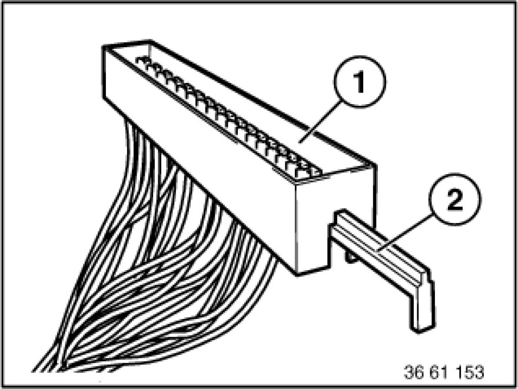
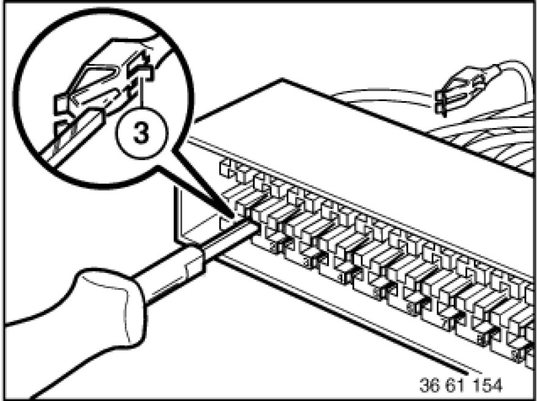

Retaining Bracket
61 13 ... - Retaining bracket

Pull relevant fuse out of fuse block (1).
Note:
Mark positions when removing fuses.
Pull locking slide (2) out of fuse block (1) as far as it will go.

With special tool 61 1 136 or 61 1 137 (ejector), press back arrester hook (3) of appropriate contact and pull out cable.